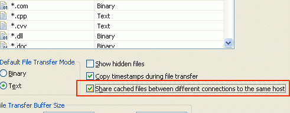
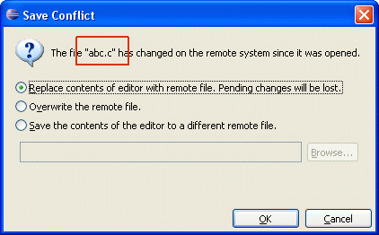
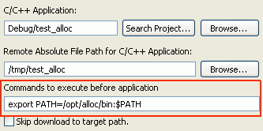

Remote System Explorer (RSE)
|
| Team Review/Synchronize with Import/Export |
In the Remote file system Export and Import wizards (File >
Import > Remote Systems > Remote File System), users can now select the new
Review/Synchronize option. This allows to see changes between the remote and local
file systems before committing changes to/from a remote system.
This new feature can also be used for just comparing remote folders with a local
counterpart, provided that no team provider is associated with the local folder
(a local unshared project with a linked resource pointing to the desired folder
can be used as a workaround if this is an issue).
Kudos to GSoC student Takuya Miyamoto for contributing this functionality.
For details, see bug
[185925].


|
| Multiple Connections to the same Host |
RSE 3.1 provides the ability to maintain separate local cache locations
for multiple connections to the same remote host. This allows to correctly maintain systems where
different logins to the same host reveal different portions of the file system (such as multiple FTP
accounts on a remote web server), or when different ports on a gateway are tunneled to different remote
hosts (such as SSH tunnels). By default, the RSE 3.0 setting of re-using the same file cache for
multiple connections is enabled but this can be disabled in the Preferences.
For details, see bug
[245260].
 |
| Show in Remote Systems view |
This feature provides the ability to select a remote object in a given
view such as the Remote System Details view or the Remote Scratchpad, and have it displayed in the
Remote Systems view. This is helpful for understanding an element's position in the file system
hierarchy to navigate up and down.
From the Project Explorer, the same action locates a selected resource in the RSE Local Files
Subsystem in the Remote Systems view. This is particularly helpful for tar, tgz or zip archives,
which RSE can browse into. It can also be used for comparing a folder's files by size, owner
or other attributes in the tabular Remote System Details view.
For details, see bug
[160105] and
[218227].
|
| Non-Case-Sensitive Remote Search |
Users now have the option to match filenames ignoring
case when doing a Remote Search. In RSE 3.0, filenames were always matched by case.
In RSE 3.1, case insensitive matching is default in order to avoid missing expected
matches. Note that from the subsystems shipped with RSE, only dstore supports
remote search.
For details, see bug
243495.
|
| RSE Save Conflict Dialog Indicating Conflicting File |
When RSE detects a save conflict, the dialog presented to the user
now indicates which file is in conflict. This is especially important when performing a
"Save All", or when dirty editors are scheduled to save during shutdown.
For details, see bug
242389.

|
| Drag and Drop of Hosts to Change Order |
The user is now able to drag and drop Host objects in the
Remote Systems view in order to change the order in which they appear.
For details, see bug
[196166]. |
| DStore File Cache Using Workspace Encoding |
Files types which are specified to transfer in text mode
(as per the Remote Systems Files Preference page) are now locally cached in the default
local workspace encoding (as specified on the Workspace Preference page). In RSE 3.0,
the local encoding was always assumed to be UTF-8; making the client encoding configurable
allows external non-Eclipse tools which only understand a specific encoding to be used on
the downloaded files. Only the dstore files subsystem performs this transcoding.
For details, see bug
267247.
|
| RSE Telnet Terminal Subsystem |
A "Terminals" subsystem for Telnet is now
available in RSE in addition to SSH [227569].
A Generic RSE Shell Service can now run based on adapting any ITerminalService [240523],
thus allowing implementers of a new protocol create a terminal service and immediately get the shell service from it.
The SSH and Telnet subsystems have been refactored to leverage this new API and thus share more common code.
|
| Remote CDT Launch feature was moved to CDT |
The remoteCDT feature has been moved to the CDT project as of the CDT M7 release.
For details, see bug
[267065].
|
| Remote CDT Launcher Supports Commands Before Launch |
The Remote CDT Launch now supports running arbitrary commands
before actually invoking the debuggee. This allows fine-tuning the environment on the remote machine where
the program will run.
But the feature can also be used to launch arbitrary applications on a remote system,
when a dummy cdt project is used and the "skip download" option is chosen.
For details, see bug
[181517].
 |
More details about API changes, new features and bugs fixed are in the
build notes of the earlier TM 3.1 milestone builds: